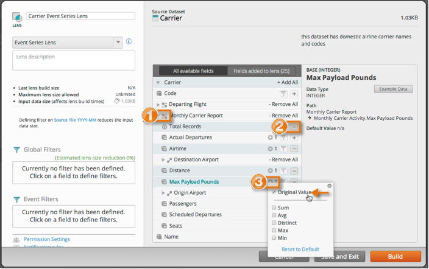

In Platfora, measure fields are always the result of an aggregate calculation. Since
event series lenses do not contain aggregated data, measure fields are not always applicable
to event series analysis. Measure fields may be included in an event series lens, however
they may not show up in the vizboard (depending on the type of analysis you
choose).

- For event series lenses, you can only choose measures from a referenced
event dataset, not from the focus dataset.
- Pre-defined measures are listed at the beginning of an event dataset. If you
add a measure to a lens, the aggregation will not be calculated at lens
build time. Measure fields that are added to the lens may not be available
in the vizboard (depending on the type of event series analysis you are
doing).
- For event series lenses, quick measure aggregations are not applicable. If
you want to use a field for funnel analysis, make sure that
Original Value is selected. This adds the field
to the lens as a dimension.